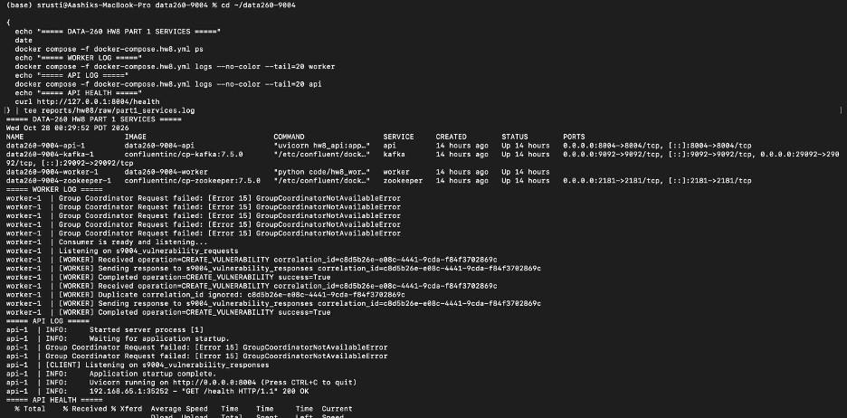
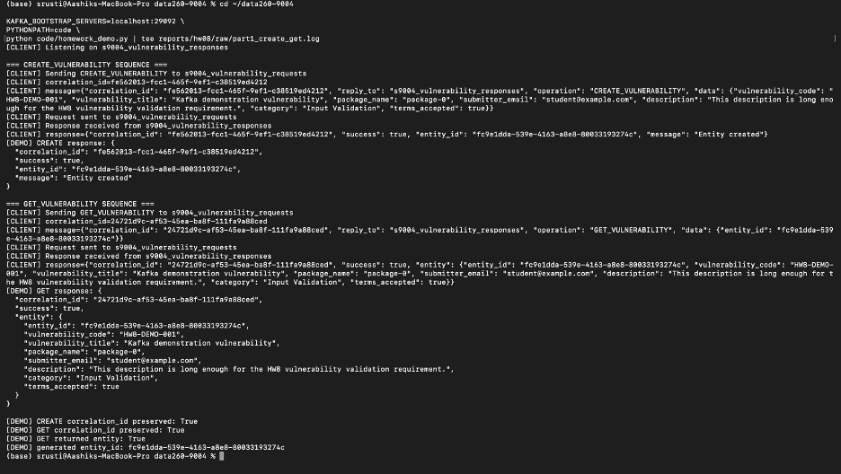
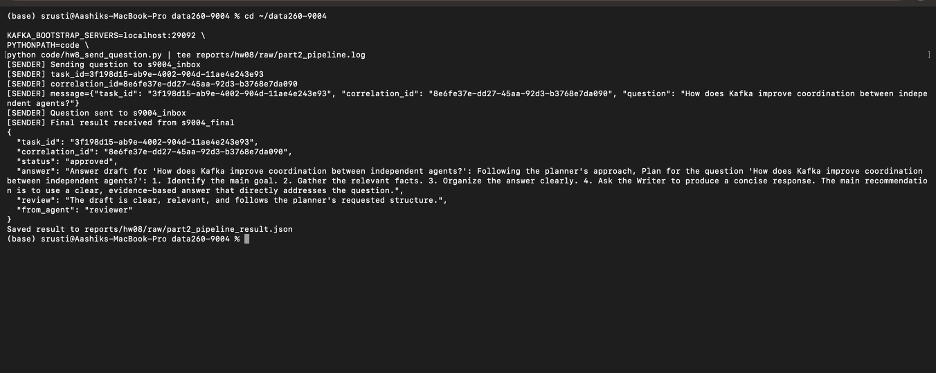
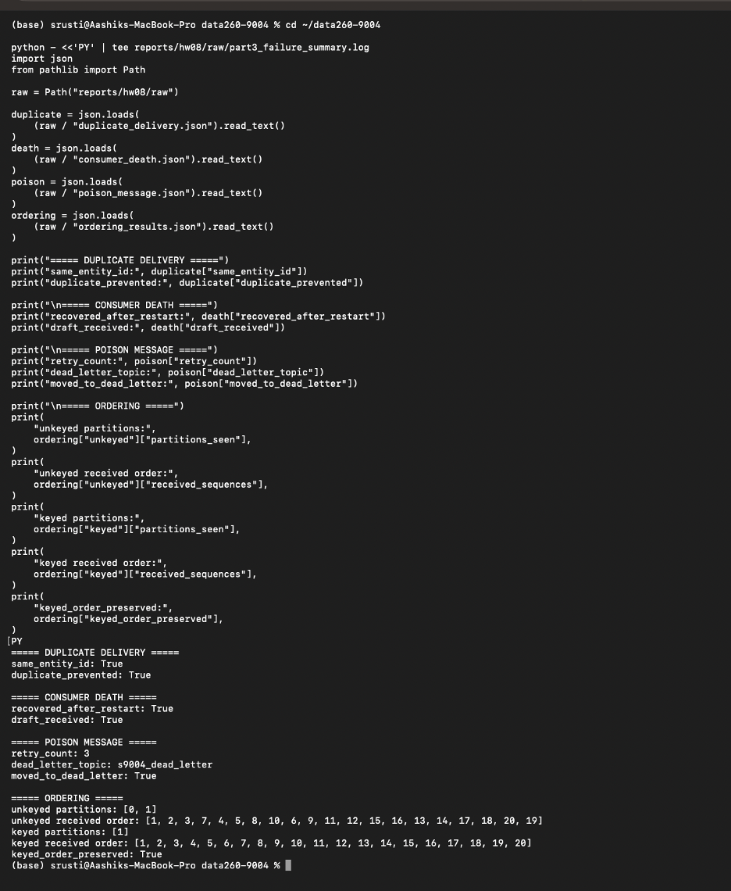

GitHub repository: https://github.com/shrustishetty-2401/data260-9004
s9004qwen3:8bhw8hw8The primary domain entity is Vulnerability.
The worker stores entities in an in-memory dictionary. Clients communicate with the worker only through Kafka.
s9004_vulnerability_requestss9004_vulnerability_responses{
"correlation_id": "unique-request-id",
"reply_to": "s9004_vulnerability_responses",
"operation": "CREATE_VULNERABILITY",
"data": {
"vulnerability_code": "HW8-DEMO-001",
"vulnerability_title": "Kafka demonstration vulnerability",
"package_name": "package-0",
"submitter_email": "student@example.com",
"description": "A sufficiently long vulnerability description.",
"category": "Input Validation",
"terms_accepted": true
}
}Successful CREATE and GET responses use the following structure:
{
"correlation_id": "same-request-id",
"success": true,
"entity_id": "uuid",
"entity": {
"vulnerability_code": "HW8-DEMO-001",
"vulnerability_title": "Kafka demonstration vulnerability",
"package_name": "package-0",
"submitter_email": "student@example.com",
"description": "A sufficiently long vulnerability description.",
"category": "Input Validation",
"terms_accepted": true
}
}Error responses preserve the correlation ID and include an error message:
{
"correlation_id": "same-request-id",
"success": false,
"error": "Entity not found"
}The CREATE then GET demonstration succeeded. The GET request returned the created vulnerability entity, and correlation IDs were preserved.


Evidence:
raw/part1_create_get.lograw/part1_error_tests.jsonraw/part1_services.logImplemented separate Planner, Writer, and Reviewer processes.
s9004_inboxs9004_taskss9004_draftss9004_finalThe pipeline completed successfully with status
approved. The task ID and correlation ID were preserved
through the pipeline.

Evidence:
raw/part2_pipeline_result.jsonraw/part2_pipeline.logRUN_LOG.txtThe same CREATE request was delivered twice. Both responses returned the same entity ID.
same_entity_id: trueduplicate_prevented: trueEvidence:
raw/duplicate_delivery.jsonThe Writer was stopped during a simulated long-running task. After restarting the Writer, Kafka redelivered the uncommitted message and the task completed successfully.
recovered_after_restart: truedraft_received: trueEvidence:
raw/consumer_death.jsonPoison messages intentionally failed processing. The Writer retried each message three times and then moved it to the dead-letter topic.
s9004_dead_lettermoved_to_dead_letter: trueEvidence:
raw/poison_message.jsonTwenty unkeyed and twenty keyed messages were tested.
| Case | Partitions | Order preserved |
|---|---|---|
| Unkeyed messages | 2 | No |
| Keyed messages | 1 | Yes |
The ordering experiment used two Kafka partitions and two consumer processes. Unkeyed messages were distributed across partitions and were not globally ordered. Keyed messages used the same entity key, were routed to one partition, and preserved their order.
keyed_order_preserved: true269004
Evidence:
raw/ordering_results.jsonraw/part3_failure_summary.logKafka provides:
The producer is responsible for publishing valid messages and using stable keys when ordering matters. The consumer is responsible for validation, idempotency, retries, offset commits, and dead-letter handling.
HW2 used a simpler request/response workflow. HW8 extends that design with Kafka topics, independent consumers, consumer groups, offset commits, retries, dead-letter handling, idempotency, consumer restart recovery, and key-based ordering.
Kafka adds durable asynchronous coordination, but it also requires explicit handling of commits, retries, duplicate messages, consumer failures, and ordering.
RUN_LOG.txtMETRICS.mdAI_USE.mdverification.jsonraw/part1_create_get.lograw/part1_error_tests.jsonraw/part1_services.lograw/part2_pipeline_result.jsonraw/part2_pipeline.lograw/duplicate_delivery.jsonraw/consumer_death.jsonraw/poison_message.jsonraw/ordering_results.jsonraw/part3_failure_summary.logThe verification script reported:
Overall result: all_passed: true
The final report PDF is:
reports/hw08/Shetty_HW8.pdf
The final submission includes the implementation, Docker/Kafka configuration, tests, screenshots, raw JSON results, logs, metrics, AI-use documentation, verification output, and the final PDF.